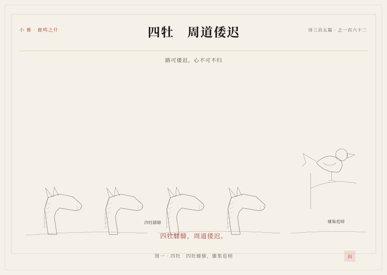
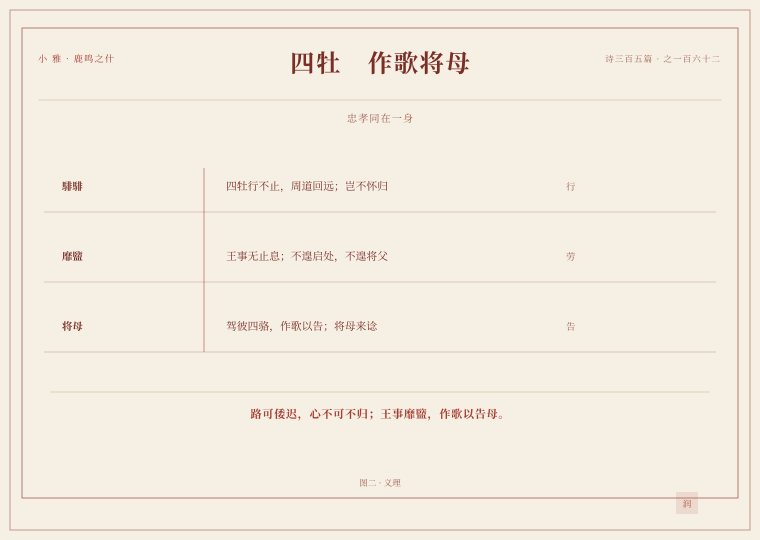

第一百六十二篇 四牡
小雅 · 鹿鸣之什 SJ162
朗读 · 普通话
依经文原文朗读，章次不读出；配古琴底乐，不改速、不加拖腔。全库同一音色（豆包 TTS），非播音员录制。
一 解题
诗三判：
- 谁在说：奉使在外之臣。驾四牡，行周道，王事不止；路远而迟迟，心归而不得归。
- 说什么事：前二章写马、写路、写「岂不怀归」；中二章以鵻鸟集木，写「不遑将父」「不遑将母」；末章驾骆作歌，以「将母来谂」收。
- 为何编在此：鹿鸣燕宾，四牡劳使；一燕一劳，一内一外。
小雅之首，先叙君臣之礼，再叙使臣之劳。
《毛序》：「《四牡》，劳使臣之来也。有功而见知，则说矣。」
朱子《诗集传》：「赋也。騑騑，行不止之貌。倭迟，回远也。靡，无。盬，止也。怀，思也。啴啴，众盛貌。骆，白马黑鬣。鵻，鹁鸠也。栩，柞也。将，养也。骎骎，骤貌。谂，告也。」
本库的看法：《四牡》写的不是「忠」，是「忠孝不能两全时，仍以歌告母」。
王事靡盬，故不遑启处；不遑将父、将母，故心悲。诗不把忠写成压倒孝，也不把孝写成废忠；它让二者同在一身，以「作歌」作解。
须辨：倭迟是回远，不是倭寇；盬是止，不是盐；啴啴是众盛、喘息，不是叹；鵻是鹁鸠，不是斑鸠泛称；谂是告，不是念。断语：路可倭迟，心不可不归；王事靡盬，作歌以告母。
先辨五事：「倭迟」是回远，不是倭寇；「盬」是止息，不是盐；「啴啴」是众盛、喘息，不是叹息；「鵻」是鹁鸠，不是斑鸠；「谂」是告，不是念。
二 经文
第一章
四牡騑騑，周道倭迟。岂不怀归？王事靡盬，我心伤悲。
第二章
四牡騑騑，啴啴骆马。岂不怀归？王事靡盬，不遑启处。
第三章
翩翩者鵻，载飞载下，集于苞栩。王事靡盬，不遑将父。
第四章
翩翩者鵻，载飞载止，集于苞杞。王事靡盬，不遑将母。
第五章
驾彼四骆，载骤骎骎。岂不怀归？是用作歌，将母来谂。
三 韵读
- 一章：騑、迟、归、悲，微、脂相叶。声长而悲。
- 二章：騑、归、处，微、鱼交错。声促。
- 三章：下、栩、父，鱼、侯相叶。声低。
- 四章：止、杞、母，之、侯交错。声咽。
- 五章：骎、归、谂，侵、微、真交错。声急而收。
读法：四章「岂不怀归」是同一问，问四次而答案不同：一章伤悲，二章不遑启处，三章不遑将父，四章不遑将母。问愈重，答愈轻；至末章不作答，只作歌。
四 字义与名物
- 四牡：四匹公马。騑騑：行不止。周道：大道。倭迟：回远。怀归：思归。靡盬：无止息。伤悲：心伤。
- 啴啴：众盛貌，一说喘息。骆：白马黑鬣。启处：跪坐、安居。鵻：鹁鸠，小鸟。苞栩：丛生的柞树。将：养、奉养。
- 苞杞：丛生的杞树。四骆：四匹骆马。骤：疾行。骎骎：马疾行貌。谂：告。
五 今译
一章：四匹公马行不止，周道回远。难道不思归？王事没有止息，我心伤悲。
二章：四匹公马行不止，骆马喘息。难道不思归？王事没有止息，我不能安居。
三章：翩翩的鵻鸟，飞上飞下，落在丛生的柞树。王事没有止息，我不能奉养父亲。
四章：翩翩的鵻鸟，飞上飞止，落在丛生的杞树。王事没有止息，我不能奉养母亲。
五章：驾起四匹骆马，疾行骎骎。难道不思归？因此作歌，把奉养母亲的心事告于上。
六 章旨
- 一章：四牡周道，是「行」；王事靡盬，是「止不得」；「我心伤悲」，是行之内的归。
- 二章：骆马喘息，是「劳」；不遑启处，是「身不得安」；劳在身，悲在心。
- 三章：鵻集苞栩，是「有枝可依」；不遑将父，是「人不如鸟」；鸟可依，人不可归。
- 四章：鵻集苞杞，是「有木可止」；不遑将母，是「人不如鸟」；愈近家，愈不能归。
- 五章：驾骆疾行，是「归心已动」；作歌告母，是「归不得而心已归」；歌成，即归之替代。
七 诗教
- 忠不是压孝：诗不说「王事重，父母轻」；它只说「不遑」，把不能两全如实写出。如实，方见其难。
- 劳使臣先劳其心：燕其来，不只赐酒，更要知其「我心伤悲」；知其心，则劳不虚。
- 作歌是礼：归不得，则以歌告；歌不是怨，是把私情纳入公礼。
八 分寸与边界
- 不把「倭迟」读成倭寇：倭迟是回远；读成倭，则周道成海道。
- 不把「盬」读成盐：盬是止息；读成盐，则「靡盬」不可解。
- 不把「鵻」读成斑鸠：鵻是鹁鸠；认错鸟，则「翩翩」之细失。
- 不把「将母」读成率母：将是奉养；读成率领，则人子之情失。
九 存疑
- 诗旨：毛序「劳使臣之来」，朱子从之；一说使臣在外所作。本库从劳使臣，兼取「作歌告母」为诗人之辞。
- 「啴啴」：毛传「喘息之貌」，朱子「众盛貌」。两存，从喘息为近。
- 「鵻」：朱子「鹁鸠」；一说「夫不」。从鹁鸠。
- 「将母来谂」：一说告母，一说告君。从告君，以「来谂」为告上。
十 跨典
- 《孝经》「事亲孝，事君忠」；此篇不并列二德，而写其相碍，正见真忠孝。
- 《孟子》「父母妻子」；此篇「将父」「将母」，是人子之常情。
- 《诗经·小雅·采薇》「靡室靡家，玁狁之故」；同是王事与家之两难。
十一 双卡与图
六对：
| 倭迟（回远） |
倭迟（倭寇） |
| 盬（止息） |
盬（盐） |
| 啴啴（喘息、众盛） |
啴啴（叹息） |
| 鵻（鹁鸠） |
鵻（斑鸠） |
| 将父（奉养父） |
将父（率父） |
| 谂（告） |
谂（念） |

图一 · 四牡 四牡騑騑，鵻集苞栩

图二 · 四牡 王事靡盬，作歌将母